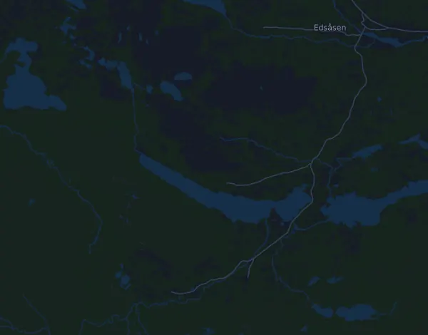

Fjällmaraton 100K
- Distance
- 99,3 km
- Højdemeter
- ↑ 2.576 m
- Højeste punkt
- 1.128 m o.h.
- Underlag
- Terræn og sti
- Karakter
- Kuperet
Højdeprofil
Forbered dig med Mila
Mila er en løbecoach i en app. Lægger du et løb ind i din plan, planlægger coachen ugerne frem til start efter din form og giver dig en tidsprognose og en plan for tempo, væske og energi på ruten.

Den rette træning. Den rette dag.
Ruten

Om ruten
Fjällmaraton 100K er et trailløb på 99,3 km i Fångåmon–Ottsjö, Undersåker (Årefjällen), Sverige. Ruten har 2.576 højdemeter stigning og 2.556 højdemeter fald, 26 m pr. km, og regnes dermed som kuperet. Det højeste punkt ligger 1.128 m o.h. og det laveste 470 m o.h.
Den største stigning begynder ved km 21,9: 517 højdemeter på 4,8 km med 10,8 % i snit, op til 1.128 m o.h. I alt har ruten 14 stigninger på mindst 25 højdemeter; den sidste begynder ved km 98,5.
I Mila-appen beskriver coachen ruten i detaljer på dit sprog og planlægger dit tempo og din energi til den.
Stigninger
| Begynder ved | Længde | Højdemeter | Hældning | Top (m o.h.) |
|---|---|---|---|---|
| km 0,0 | 4,9 km | 95 m | 1,9 % | 600 |
| km 8,3 | 10,4 km | 26 m | 0,3 % | 601 |
| km 20,7 | 760 m | 39 m | 5,1 % | 647 |
| km 21,9 | 4,8 km | 517 m | 10,8 % | 1.128 |
| km 35,9 | 7 km | 376 m | 5,4 % | 876 |
| km 51,0 | 3,4 km | 161 m | 4,8 % | 667 |
| km 54,7 | 4 km | 92 m | 2,3 % | 722 |
| km 59,5 | 570 m | 27 m | 4,8 % | 696 |
| km 60,2 | 2,9 km | 193 m | 6,7 % | 882 |
| km 65,0 | 3,3 km | 227 m | 6,8 % | 948 |
| km 74,3 | 1,8 km | 25 m | 1,4 % | 507 |
| km 78,0 | 6 km | 452 m | 7,5 % | 929 |
| km 92,5 | 3 km | 79 m | 2,7 % | 662 |
| km 98,5 | 630 m | 25 m | 4,0 % | 526 |
Ofte stillede spørgsmål
Hvornår løbes Fjällmaraton 100K?
Fjällmaraton 100K løbes torsdag den 29. juli 2027 (foreløbig dato). Tjek dato og starttid hos arrangøren.
Hvor langt er Fjällmaraton 100K, og hvor mange højdemeter er der?
Løbet er 99,3 km langt med 2.576 højdemeter stigning og 2.556 højdemeter fald. Det højeste punkt ligger 1.128 m o.h.
Hvordan er ruten på Fjällmaraton 100K?
Ruten regnes som kuperet, med 26 højdemeter pr. km i snit. Den har 14 stigninger på mindst 25 højdemeter; den største begynder ved km 21,9: 517 højdemeter på 4,8 km. Ruten går fra start til et mål et andet sted. Underlaget er terræn og sti.
Hvordan fordeler jeg farten på Fjällmaraton 100K?
Gå efter en jævn indsats frem for et jævnt tempo: lad farten falde på stigningerne, hent den igen, når det flader ud, og hold igen de første kilometer. De største stigninger begynder ved km 21,9, km 35,9, km 65,0 og km 78,0. I Mila får du en tempoplan til netop denne rute efter din egen form.
Flere løb som dette
Flere løb i nærheden
- Kia Fjällmaraton 45K7. august 2027 · Fångåmon, Sverige
- Stockholm Halvmaraton 21 km21. august 2027 · Stockholm, Sverige
- Fjällmaraton Sälen 42 km21. august 2027 · Sälen (Lindvallen, Experiumtorget), Sverige
- Midnattsloppet Göteborg 10 km21. august 2027 · Göteborg, Sverige
- Trailvasan 3021. august 2027 · Oxberg, Sverige
- Ultravasan 45 43,8 km21. august 2027 · Oxberg, Sverige
Forbered dig med Mila
Den rette træning. Den rette dag.
Oplysningerne kommer fra rutefilen og arrangørens information. Tjek dato, starttider og regler hos arrangøren.
Mila er ikke tilknyttet, sponsoreret af eller godkendt af arrangøren eller løbets sponsorer. Navne og varemærker tilhører deres ejere. Arrangør eller rettighedshaver? Bed om ændring eller fjernelse